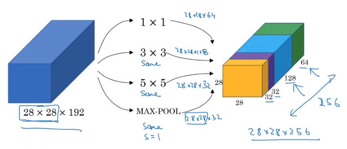

Inception Architecture
As we’ve discussed in other notebooks, a key reason that we employ convolution to our image networks is to adjust the complexity of our model.
When we apply N convolutional filters to a given layer, the following layer has final dimension equal to N– one for each channel.
1x1 Convolution
Because convolution gets applied across all channels, a 1x1 convolution is less about capturing features in a given area of any channel, but instead translating information into other, easier-to-compute dimensions.
Intuition
It’s helpful to consider a 1x1 convolution as a sort of “Fully Connected sub-layer” that maps the value in all channels to one output cell in the next layer.
You can see that this intuition holds below, considering that we’re evaluating 32 input values against 32 weights– basic hidden layer stuff.
from IPython.display import Image
Image('images/one_by_one.png')
Additionally, applying more 1x1 convolution filters allows us to translate between the final input dimension to arbitrarily-many dimensions for the next layer, while maintaining the information gain of training (because each FC sub-layer will still update on backprop like a normal network).
Image('images/net_in_net.png')
But how is this useful?
Computation Benefits
Consider a simple case where we want to go from a 28x28x192 layer via 32 5x5 filters
Image('images/shrink_channels_before.png')
The amount of calculations that happen here are a direct function of:
- The dimensions of the output layer
- The number of channels in the input layer
- The size of the filters
Giving us
$ (28 * 28 * 32) * (192) * (5 * 5) \approx 120M$
Now see what happens when we use 1x1 convolution to create an intermediate layer.
Image('images/shrink_channels_after.png')
Enumerating the calculations happens in two stages.
First, going from the input layer to the hidden layer.
$ (28 * 28 * 16) * (192) * (1 * 1) \approx 2.4M $
Then going from the hidden layer to the output layer
$ (28 * 28 * 32) * (16) * (5 * 5) \approx 10M $
Summing the two, we get 12 Million – nearly a tenth of the number of computations as before, while still outputting a 28x28x32 layer, and maintaining strong information gain by employing multiple “Fully Connected sub-layers” as mentioned above.
Inception Network
Block Level
And so the Inception Network developed by Google uses this to great effect. Instead of figuring out what filter/kernel size to apply from layer to layer, they build in 1x1, 3x3, 5x5, as well as a Max-Pool layer for good measure, then concatenate them all together into a huge, 256-channel output. They leave it to backpropagation to figure out which sections of the output are worth using for information gain.
Image('images/inception_motivation.png')
Mechanically, as above, they leverage the computation-reduction afforded by 1x1 filters for each component. This practice is often referred to as a bottleneck layer wherein you shrink the representation before expanding again via convolution filters.
Image('images/inception_block.png')
This results in:
- Very flexible learning strategies
- Relatively cheap computation
At Scale
So much so, that the architecture is implemented as a bunch of these blocks chained together
Image('images/inception_unzoomed.png')
Using It
V3
As we mentioned in the VGG architecture notebook, the Inception architecture is available for use in keras (and also is a heafty download if you haven’t yet used it!)
from keras.applications import inception_v3
model = inception_v3.InceptionV3()Using TensorFlow backend.
I’ll spare you scrolling through model.summary(), it’s pretty huge.
len(model.layers)313
Total params: 23,851,784
Trainable params: 23,817,352
Non-trainable params: 34,432
Documentation is available here
Inception ResNet
Alternatively, there is promising work being done to combine the best elements of the Inception framework with the information-passing elements residual Neural Networks.
You can employ the latest version of this work, again using keras, with the following.
from keras.applications import inception_resnet_v2
model = inception_resnet_v2.InceptionResNetV2()It’s even bigger
len(model.layers)782
Total params: 55,873,736
Trainable params: 55,813,192
Non-trainable params: 60,544